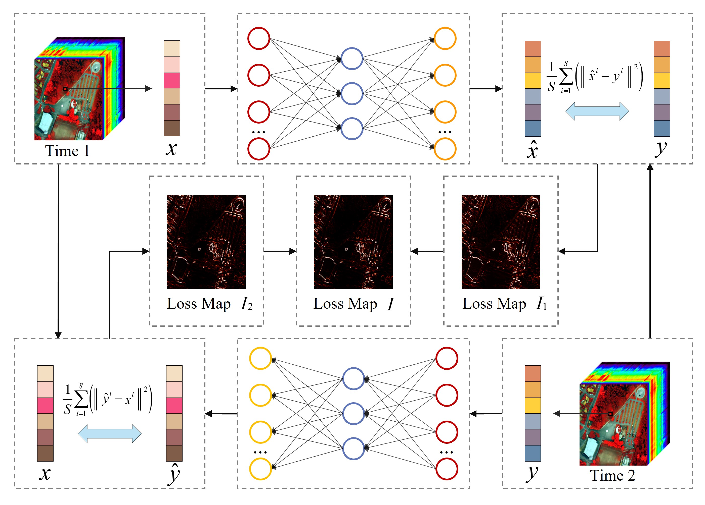
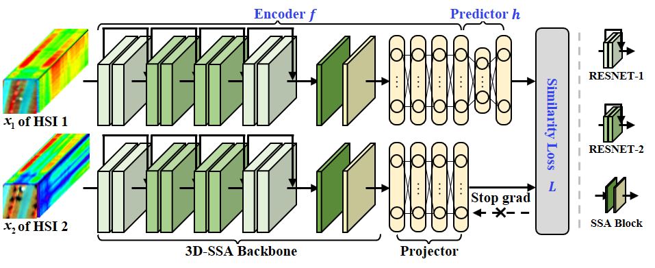

HU Meiqi(胡美琪-武汉大学) |
News
- [2023.04] One co-authored paper has been accepted by IEEE JSTARS (link)!
- [2023.04] One paper is acceptted as a Poster by IGARSS 2023 (homepage)!
Research Interest
I am working in remote sensing change detection and deep learning theory. Currently, I focus on the following research topics:- Change detection with bi-temporal hyperspectral remote sensing images
- multi-class change detection
Education
- 2021.09-now Pursuing Ph.D of Photogrammetry and Remote Sensingin LIESMARS, Wuhan University. Supervisor: Prof. Liangpei Zhang & Bo Du & Chen Wu
- 2019.09-2021.06 M.E.Candidate of Photogrammetry and Remote Sensing in LIESMARS, Wuhan University. Supervisor: Prof. Liangpei Zhang & Bo Du & Chen Wu
- 2015.09-2019.06 B.E. of Surveying and Mapping in School of Geosciences and Info-Physics, Central South University.
Publications
Journals:
 |
[3]Binary Change Guided Hyperspectral Multiclass Change Detection
M. Hu, C. Wu, B. Du and L. Zhang, IEEE Transactions on Image Processing (TIP), 2023. (SCI Q1 TOP, IF=11.041) [Paper][Code] |
 |
[2] HyperNet: Self-Supervised Hyperspectral Spatial–Spectral Feature Understanding Network for Hyperspectral Change Detection
M. Hu, C. Wu and L. Zhang, IEEE Transactions on Geoscience and Remote Sensing (TGRS), 2021. (SCI Q1 TOP, IF=8.125) [Paper][Code] |
|  |
[1] Hyperspectral Anomaly Change Detection Based on Autoencoder
M. Hu, C. Wu, L. Zhang and B. Du, IEEE Journal of Selected Topics in Applied Earth Observations and Remote Sensing (JSTARS), 2021. (SCI Q3, IF=4.715) [Paper][Code] |
Conferences:
|  |
[1] Multi-Temporal Spatial-Spectral Comparison Network For Hyperspectral Anomalous Change Detection
M. Hu, C. Wu and B. Du, Proceeding of the IEEE International Geoscience and Remote Sensing Symposium (IGARSS 2022), 2022. (EI) [Paper] |
Membership:
- IEEE, Student Member
- IEEE Geoscience and Remote Sensing Society (GRSS), Student Member
Journal Reviewer:
- IEEE Transactions on Image Processing (TIP)
- IEEE Transactions on Geoscience and Remote Sensing (TGRS)
- IEEE Journal of Selected Topics in Applied Earth Observations and Remote Sensing (JSTARS)
- IEEE Geoscience and Remote Sensing Letters (GRSL)
Awards
- 2022.12，2022年国际地理信息学青年论坛 最佳报告奖
- 2021.11，武汉大学优秀研究生
- 2021.11， Second Prize of Academic Scholarship, Wuhan University | 学业奖学金二等奖
- 2021.10，第六届全国成像光谱对地观测学术研讨会 优秀报告奖
- 2019.06，中南大学优秀毕业生
- 2018.10，国家励志奖学金
- ...
- CET4: 536
- CET6: 517